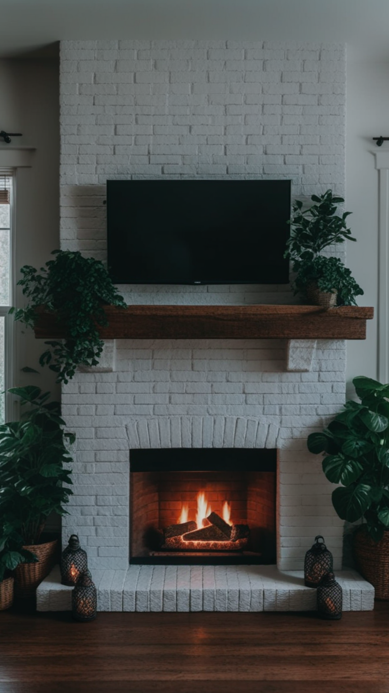
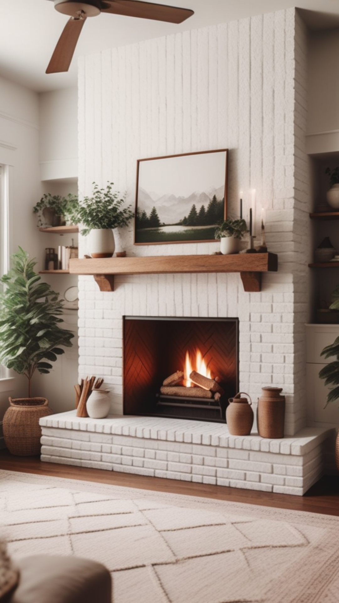
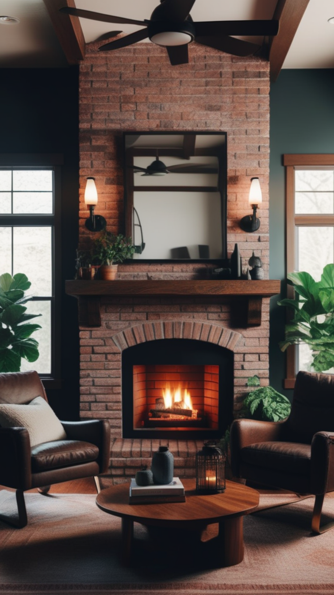
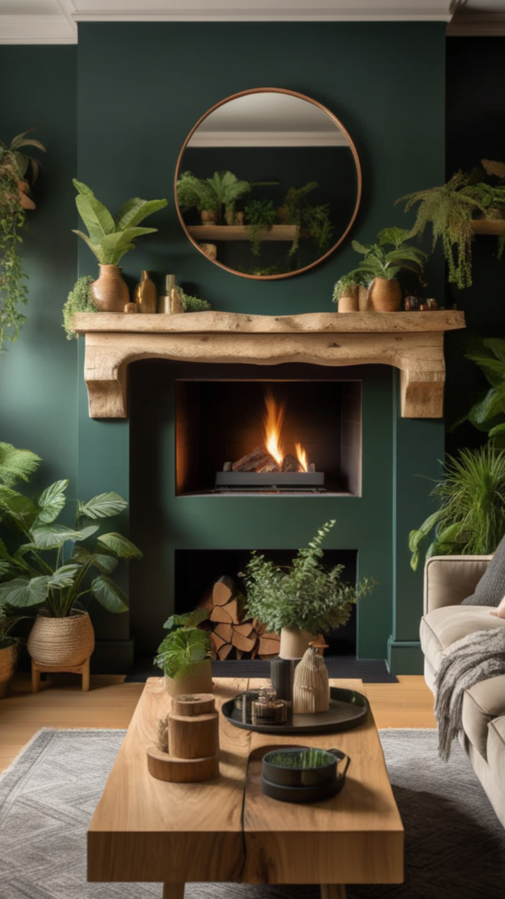

The fireplace is often the heart of a living room, serving as both a functional heat source and a stylish focal point. Whether you have a traditional wood-burning fireplace or a sleek modern electric version, decorating around it can enhance the warmth and charm of your home. This guide explores creative ideas to maximize the potential of your living room decor fireplace setup.
Selecting the perfect fireplace design depends on your aesthetic preferences and the overall style of your home. Here are some popular options:
- Traditional Brick or Stone Fireplaces: Classic and timeless, these fireplaces exude a cozy and rustic appeal.
- Modern Minimalist Fireplaces: Sleek, clean lines and neutral tones make for a contemporary centerpiece.
- Wall-Mounted or Floating Fireplaces: Perfect for small spaces, these fireplaces provide warmth without taking up floor space.
- Double-Sided Fireplaces: Ideal for open-concept homes, they offer ambiance to multiple rooms at once.
Enhancing Your Living Room Decor with Fireplace Accessories
Once you've chosen your fireplace style, accessorizing it properly can significantly enhance its charm. Consider the following elements:
The mantel is a prime area for decoration. You can place decorative objects such as:
- Artwork or Mirrors: Hanging a large mirror above the fireplace creates an illusion of more space, while artwork adds personality.
- Candles and Lanterns: These provide additional lighting and a warm glow, enhancing the cozy ambiance.
- Seasonal Decor: Swap out decorations based on the season to keep your space fresh and inviting.
- Tile or Marble Surrounds: A decorative tile or marble finish adds elegance and sophistication.
- Built-in Bookshelves: Flanking your fireplace with bookshelves creates a cozy reading nook.
- Stacked Firewood Displays: For a rustic touch, neatly stacked firewood can serve as both a practical and aesthetic addition.
To highlight your living room decor fireplace, thoughtful lighting and seating arrangements are essential:
- Ambient Lighting: Use wall sconces, pendant lights, or LED strip lights to create a warm and inviting atmosphere.
- Cozy Seating: Arrange comfortable seating like plush sofas or armchairs around the fireplace to encourage conversation and relaxation.
- Rugs and Throws: Soft textures like thick rugs and knit throws add an extra layer of coziness to your fireplace area.
To achieve a balanced and harmonious look, consider your color scheme and materials. Neutral tones with pops of color can create a welcoming feel, while metallic or wooden accents add depth. Personal touches like family photos, heirlooms, or stylish decorative pieces help make the space uniquely yours.
A living room decor fireplace is more than just a heat source; it's a statement piece that sets the tone for your home's aesthetic. By choosing the right fireplace design, accessorizing strategically, and focusing on lighting and seating arrangements, you can transform your living room into a warm and stylish retreat. Whether your style is classic, modern, or eclectic, thoughtful decor choices will ensure your fireplace remains the heart of your home.
   